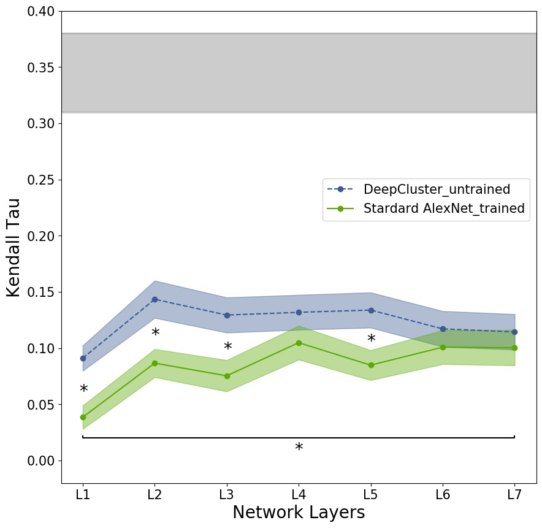
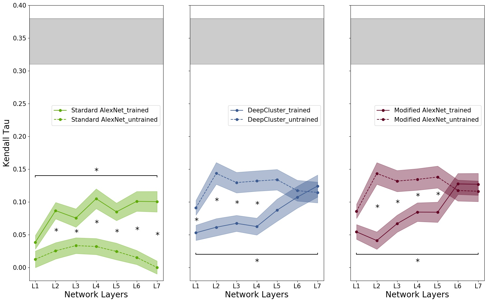

Convolutional neural networks (CNNs) have proven effective as models of visual responses in the inferior temporal cortex (IT). The belief has been that training a network for visual recognition leads it to represent discriminative features similar to those the brain has learned.
However, a CNN's response is affected by its architecture and not just its training. We therefore explicitly measured the effect of training different CNN architectures on their representational similarity with IT.
We evaluated two versions of AlexNet and two training regimes, supervised and unsupervised. Surprisingly, we found that the representations in an untrained (random-weight) variant of AlexNet, reflect brain representations in IT better than the benchmark supervised AlexNet and also better
than the corresponding network trained in either a supervised or unsupervised manner. These results require a re-evaluation of the explanation of why CNNs act as an effective model of IT.
Highlights
- Activations in some untrained random weights architectures may correlate with IT better than other trained networks

- In some cases, training may cause the network representations to become less, rather than more, similar to IT neural activity patterns

- Architecture may often play a larger role than training.
Get the data
Data are available in an open S3 bucket. To download them use the following command:
aws s3 cp s3://cusacklab/2020ICLR_BAICS_ATRC_opendata/ your/path/to/folder --recursive
What will be downloaded:
- The trained unsupervised DeepCluster and supervised AlexNet
- The activations of each network in response to the 92 images
- The values (Kendall's Tau) of the correlations between each subject and each network's layer.
Workflow